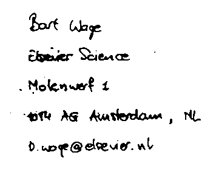
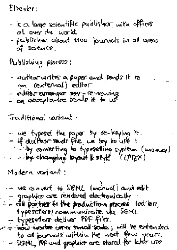
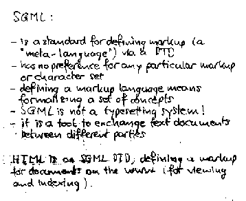
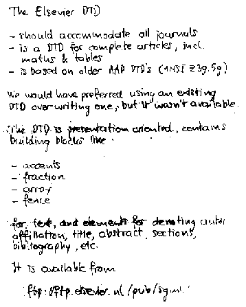
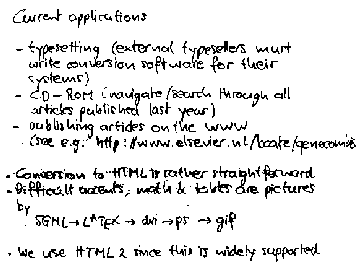
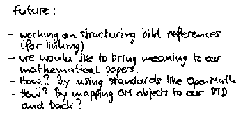

B. Wage: Elsevier's use of HTML, SGML, and Math Conventions
Slides presented at OpenMath Workshop 4 by Bart Wage.

(full size, 3k)
(original, 230k)

(full size, 15k)
(original, 285k)

(full size, 9k)
(original, 250k)

(full size, 11k)
(original, 260k)

(full size, 9k)
(original, 240k)

(full size, 5k)
(original, 225k)
This page is part of the OpenMath Web archive,
and is no longer kept up to date.